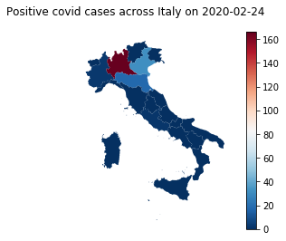
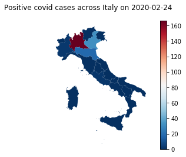

In this analysis of the spread of covid-19 across Italy was the first time using the GeoPandas library. Once you have found a shape file (.shp) the GeoPandas can plot any and all types of weird and wonderful shapes by reading their geometry column on the dataset, the first plot shows us the exact outline of Italy, split up by region.
I first had to clean up the ‘Date’ column as at the start of the recording they were published at ‘T-17:00’ then later on publishing happened at ‘T-18:00’ therefore when I selected dates for my function it caused errors to occur. Therefore, splitting on the ‘T’ I was able to select dates in the ‘YYYY-MM-DD’ format. Thinking further on about merging my dataframes I wanted to name the columns of region name and code the same for both sets and you can see the change in the ‘italy_shape’ dataframe.
I wanted to make a function that takes in these two dataframes, cleans what needs to be cleaned and returns a choropleth map of deaths, cases or any other factor I wanted to analyse, all of this is illustrated by the map produced for the ‘2020-12-06’ which happened to be the last day of recordings on this dataset. I soon realised were accumulative and not deaths per day, as a result the spread of covid-19 wasn’t as clear as I would like. Consequently, I decided to produce maps based on the number of current positive test in the region, and this small change produced the desired effect. Using a for loop I created a list of dates in two week intervals from the start date to the end date with 22 in total, then inputted each of those dates into the function created earlier. The list of maps produced shows the stark reality of how quickly the virus spread, the first date the only red region is Lombardy with roughly 160 cases record, just two weeks later around 4000 cases were recorded. The northern region became infected first and all regions surrounding Lombardy had growing infection cases but what is scary is the legend on the side, by the sixth map the scale increased from 160 cases to 35,000 cases. Unfortunately, many countries like Italy experienced the second wave of covid-19, perhaps the ending of lockdowns and easing of restrictions attributed this effect or more worrying the virus mutating into new variants. By the end of the year in November and December cases growing once again across the whole country with Lazio and Campania regions near the south matching case number of that in the north.
Notably, the northern region of Lombardy consistently remained the worst region for infections which raises questions why that is the case. According to Wikipedia Lombardy has the greatest population of all regions, almost double the second most populated region of Lazio. Lombardy’s capital city Milan is also the financial capital of the country so could indicate more people from that region were still required to work during lockdowns and other restrictions. Although I suspect the high case numbers are derived from a multitude of reasons.
The last two plots were made because I wanted to see bad cases and deaths were relative to another badly affected region. A direct comparison with Campania, a region with just above half the population size, highlight two interesting points. During the first wave (feb-june) Lombardy recorded a greatly disproportionate number of cases, perhaps the national effort during that time in regards to testing was focused in the northern region whilst the south had a few days’ notice and changed their behaviour before the virus took affect down there. In terms of deaths in the last graph the disparity is there to see, by September Lombardy had over 15,000 deaths compared to around 450.